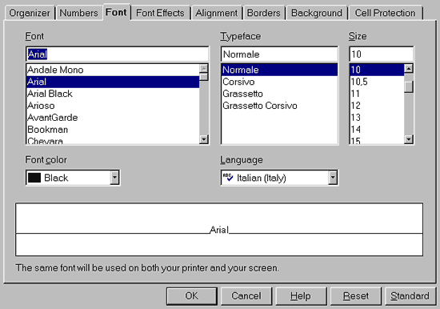
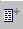

choose Format – Stylist,
or press F11,
or click the icon  on the Function Bar.
on the Function Bar.
provided by the OpenOffice.org Documentation Project
A. -- to a cell
Open the Stylist:
choose Format – Stylist,
or press F11,
or click the icon  on the Function Bar.
on the Function Bar.
Inside the Stylist window, there are several ready-to-use styles. You may choose the Default style to modify it as you wish:
select the Default style
right click to display the context menu
choose Modify...

This new window includes all tabs needed to format your cells, either for the
fonts, alignment, or numbers. In fact, it's this latter tab which is the
most used.
Let's take a look at the Currency setting of the Numbers tab. Here, you can choose which currency you wish to work with. Below, you can see what is displayed if you click on this category:
A box called Format is displayed. Select your currency and an example
is shown just to the right. The language is what you have chosen by default
in the global options of your OOo Suite.
Under 'Options', select the number of decimal places that you wish to be displayed, the color of the negative numbers, etc.
When you have completed your choices, click the OK button and all cells formatted with the Default style will be changed according to the new settings..
Note
: If you don't want to accept the style of some cell, select it and instead
of changing the Default standard, when the right click context menu appears, select New....
In this way you'll be able to create your own style. Repeat the same actions
you may have done for the Default style changes. Then, give it
a name for the new style in the Organizer tab and click on OK to
have the new style displayed in the Stylist window.
To apply it to a cell, locate your cursor inside the cell and then double click
on the name style, inside the Stylist.
B. -- to a page
Once more, everything happens inside the Stylist.
Click the second icon of the Stylist to access the 'Page Styles'
Right click on the 'Default' style and choose Modify...
The windows that will appear have some new tabs:
Remember: it's inside this page that you can set the header and the footer
of your sheets and the color of the background too. Some tabs are the same as
we have found in the previous procedure, so they will not be explained again.
Instead, pay attention to the Page tab:
Now, let's examine another very interesting tab: the Sheet.

It's self-explanatory, except for the section, Scale, which is a bit obscure:
'Reduce/enlarge printout' allows you to decrease or increase the size of the print image of your sheet
'Fit printout on number of pages' allows you to determine the exact number of pages on which the spreadsheet will be printed. The size of the sheets will be adjusted to fit that number.
Attention: to use this feature, you have to select, by highlighting an area of cells, because the function isn't for one or two cells only, but rather for a range.
You can access the formatter by selecting 'AutoFormat' from the menu, Format, or by clicking on this icon: that you find in the Toolbar to the left of your display.
Incredible! It seems that the whole presentation work has been done automatically!
:-)
You only have to click on the format's name tabs to select what you prefer!
Of course, you can create your own format (see the Add.... button to the right) and, eventually, delete it when you think that its look and feel doesn't reflect the fashion of the moment anymore!
By clicking on More, some additional formatting options appear. If you modify them, the result will be presented in the preview image displayed in the AutoFormat window.
Note : if you want to undo an AutoFormat action, select the zone to which you have applied the style, right click on it to display the context menu and choose 'Default'.
They consist of a collection of cell styles, Themes, whose settings are fixed, but whose styles are interchangeble.
To understand how they work:
Yes, to utilize these themes, it is necessary to learn a bit about them, but it's so easy to learn!
Author: Sophie Gautier
Thanks to: Richard Holt, great proofreader and OOo contributor
Intgr by: Gianluca Turconi
Last modified: February 18, 2002
Contacts: OpenOffice.org Documentation Project http://documentation.openoffice.org/index.html
Translation: Gianluca Turconi